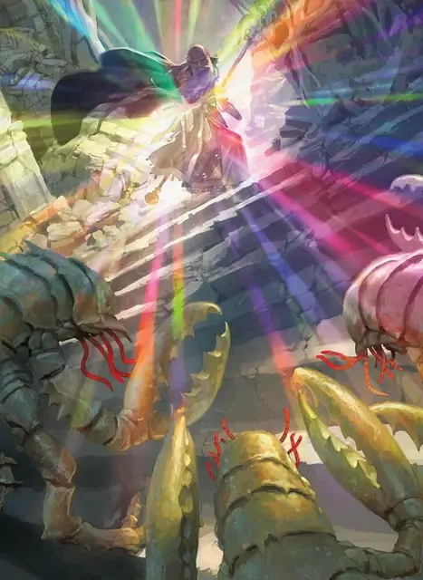

Радужные брызги
Prismatic Spray
7 уровень, Воплощение

Время сотворения 1 действие
Дистанция На себя (60-футовый конус)
Компоненты В, С
Длительность Мгновенная
Классы Бард, Волшебник, Чародей
Восемь разноцветных лучей света вылетают из вашей ладони. Каждый луч своего цвета, и у каждого свои особые свойства. Все существа в пределах 60-футового конуса должны совершить спасбросок Ловкости. Для каждой цели совершите бросок к8, чтобы определить, луч какого цвета её коснулся.
1. Красный. Цель получает 10к6 урона огнём при провале или половину этого урона при успехе.
2. Оранжевый. Цель получает 10к6 урона кислотой при провале или половину этого урона при успехе.
3. Жёлтый. Цель получает 10к6 урона электричеством при провале или половину этого урона при успехе.
4. Зелёный. Цель получает 10к6 урона ядом при провале или половину этого урона при успехе.
5. Голубой. Цель получает 10к6 урона холодом при провале или половину этого урона при успехе.
6. Синий. При провале цель становится опутанной. После этого цель в конце каждого своего хода совершает спасбросок Телосложения. Если будет совершено три успешных спасброска, заклинание оканчивается. Если накопится три провала, цель навсегда превращается в камень и становится окаменевшей. Успехи и провалы не обязаны быть последовательными; отслеживайте их отдельно друг от друга, пока не накопится три результата одного вида.
7. Фиолетовый. При провале цель становится ослепшей. В начале вашего следующего хода она совершает спасбросок Мудрости. Успех оканчивает ослепление. При провале существо перемещается на другой план существования на выбор Мастера и перестаёт быть ослепшей (обычно существа на неродных планах изгоняются домой, а остальные существа обычно выбрасываются на Астральный или Эфирный планы).
8. Особенность. По цели попадают два луча. Совершите ещё два броска кости, перебрасывая выпавшие «8».